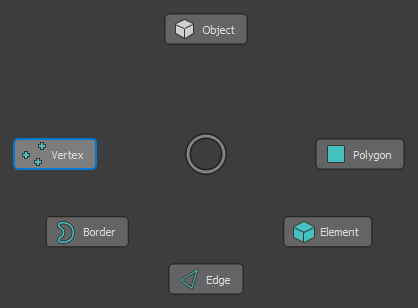
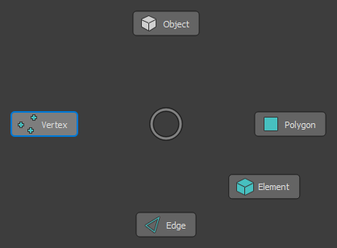

Tools / Modes Pie
Modes Pie
Switch between Object, Vertex, Edge, Border, Polygon and Element with a flick of Tab.
What it does
The Modes pie changes the sub-object level. Each mode is always in the same place, so you can flick without looking. The level you are in is outlined. It works on Editable Poly, Edit Poly, Editable Spline and Unwrap UVW.

Tab flick between Vertex, Edge, Polygon and Element, keeping the selection.
How to use it
- Select an object and press Tab. A pie menu opens around the mouse. Hold the key, flick the mouse toward a button and let go to run it. You can also click a button. Esc, a right-click or a click in the centre closes the pie. If you let go of the key without moving, the pie stays open for a click.
- Flick toward the mode you want: Vertex left, Polygon right, Edge bottom, Object top, Border bottom left, Element bottom right.
- The selection is converted as you change level, like Ctrl+clicking a level in the modify panel: the new level gets everything the old selection touches.
Options
| Button | What it does |
|---|---|
| Object | Leaves the sub-object level. |
| Vertex, Edge, Border, Polygon, Element | Goes to that level of the Editable Poly at the bottom of the stack, even with modifiers on top. |
| Spline, Segment | On a spline the right button is Spline and the bottom button is Segment; Border and Element are left out. |
On a poly, going from polygons to vertices or edges takes everything they touch. Going from vertices or edges to polygons takes only the polygons they fully enclose.

Good to know
- In the Edit UVWs window the pie works on UVs. Element selects whole islands.
- Picking Edge while already at edge level turns Max's hard-edge display on or off.
- Tab also opens the pie when the keyboard focus is in a Max panel such as the modifier stack, and focus returns to where it was afterwards.
- From Object level the pie converts from the level you last left.